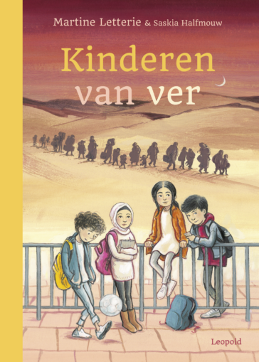
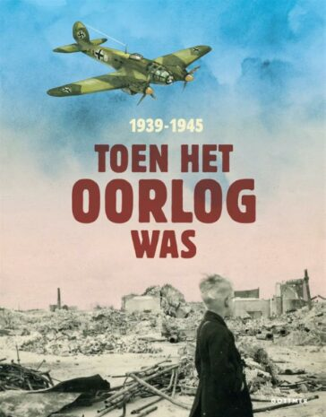
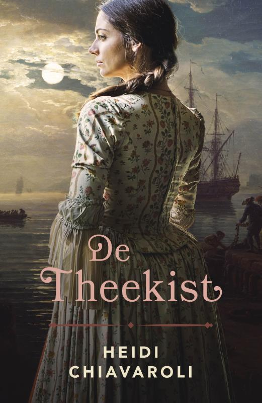

Kinderen boeken
Indrukwekkende verhalen voor jonge kinderen over vluchtelingenkinderen. Gebaseerd op waargebeurde verhalen. Samuel, Tamar, Azad en Fatima zijn doodgewone kinderen. Tot er oorlog uitbreekt en ze alles en iedereen die ze kennen moeten achterlaten. Op zoek naar een plek waar ze veilig zijn. Kinderen die een oorlog hebben meegemaakt in Syrië en Afghanistan vertelden hun verhaal aan Martine Letterie. Daarop baseerde ze dit boek. Met full colour illustraties van Saskia Halfmouw.
Historische boeken

Toen het oorlog was, 1939-1945' is een prachtig informatief kinderboek over de Tweede Wereldoorlog dat bekroond werd met een Zilveren Griffel. In 2020 eindigde het bovendien in de top 3 van de Kinderjury. Kinderen zijn vaak heel geïnteresseerd in de Tweede Wereldoorlog en hebben er ontzettend veel vragen over. In 'Toen het oorlog was, 1939-1945' geven de auteurs van tekstbureau Patsboem! educatief daar in begrijpelijke taal een antwoord op. Het is opgezet als bladerboek met verschillende korte stukjes tekst, die zijn opgedeeld in thema's. De thema's gaan bijvoorbeeld over het dagelijks leven in de oorlog, of de belangrijkste gevechten. Het kind volgt zijn of haar eigen interesse door het boek heen. Het boek gaat vooral over Nederland in de Tweede Wereldoorlog, maar geeft ook zeker aandacht aan gebeurtenissen wereldwijd. Ook moeilijke onderwerpen gaat het niet uit de weg, maar wel op zo'n manier dat het voor kinderen niet te heftig wordt. 'Toen het oorlog was, 1939-1945' is een verzorgd overzichtswerk voor kinderen vanaf 10 jaar die meer willen weten over de Tweede Wereldoorlog. Het staat vol indrukwekkende historische foto's, en illustrator Irene Goede maakte de sfeervolle illustraties, die de soms indringende tekst verluchtigen en een extra dimensie geven aan de historische beelden. Het boek won in 2020 een Zilveren Griffel.
Romans
In De theekist van Heidi Chiavaroli vechten twee vrouwen door de eeuwen heen voor liefde, vrijheid en hun geloof. In het Boston van 1773 staat Emma Malcom voor een onmogelijke keuze: haar hart volgt naar Noah Winslow, een fervent tegenstander van de Britse kroon, terwijl haar vader haar heeft beloofd aan de sadistische Samuel Clarke. Wanneer Emma en Noah een protestactie organiseren die de kroon raakt, komt Samuel met een dreigement dat Emma dwingt tot een fatale beslissing. In het heden probeert Hayley Ashworth haar verleden te overwinnen terwijl ze haar droom najaagt om de eerste vrouwelijke Navy SEAL te worden. Een onverwachte ontmoeting met een oude liefde leidt haar naar een mysterieuze theekist vol waardevolle documenten. Hierin schuilt misschien de kracht en vrijheid die ze zo wanhopig zoekt. De theekist is een meeslepende historische roman die thema's als moed, opoffering en de kracht van vrouwelijkheid verkent. Het boek is perfect voor lezers die houden van sterke vrouwelijke hoofdpersonages en historische context, vergelijkbaar met de werken van Laura Frantz en Francine Rivers. Met een combinatie van spanning, emotie en historische diepgang biedt dit verhaal een unieke kijk op de strijd voor rechtvaardigheid en liefde. Laat je meevoeren door de verhalen van Emma en Hayley en ontdek hoe verleden en heden met elkaar verweven zijn in een zoektocht naar vrijheid. Dit boek is een waardevolle aanvulling voor elke boekenliefhebber die op zoek is naar inspiratie en kracht in de verhalen van vrouwen door de tijd heen.